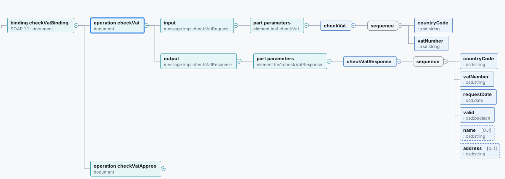
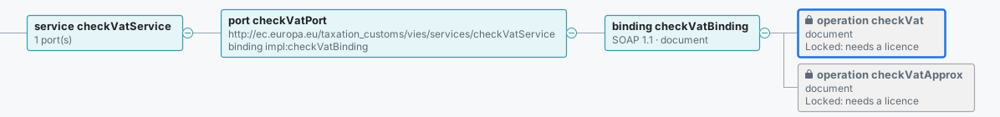
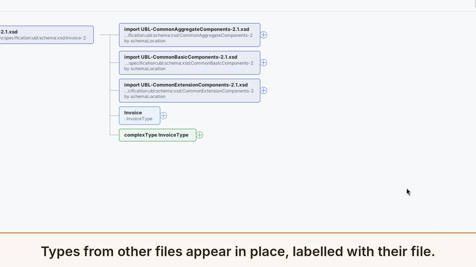
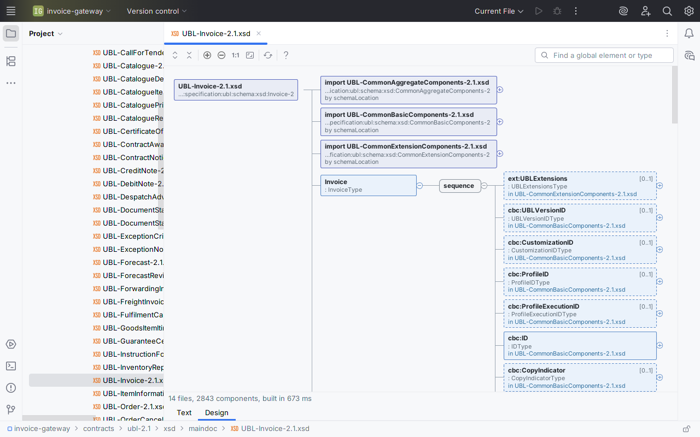
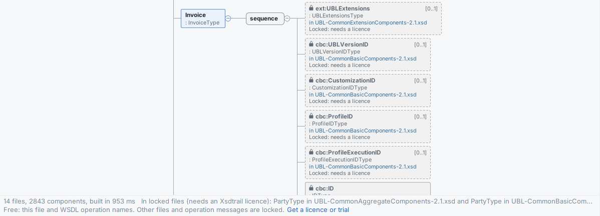
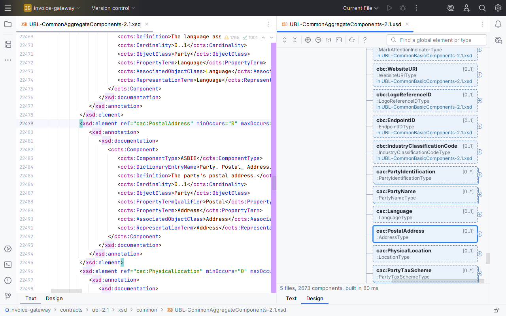

Xsdtrail for XSD and WSDL
Large XSDs split across multiple files in the same folder? Open a Design tab that shows them as one diagram, then double-click any box to land on its source line. Free for one file; pay once for all of them.
![Xsdtrail's Design tab on UBL-Invoice-2.1.xsd in IntelliJ IDEA: the file box, its three imports with the files they resolved to (UBL-CommonAggregateComponents, UBL-CommonBasicComponents and UBL-CommonExtensionComponents), and Invoice unfolded through a sequence into ext:UBLExtensions, cbc:UBLVersionID, cbc:CustomizationID, cbc:ProfileID and more, each marked [0..1] and labelled 'in UBL-CommonBasicComponents-2.1.xsd' or the extension file. Under it: '14 files, 2843 components, built in 967 ms' and the Text and Design tabs](img/invoice-project.png)
Above: the OASIS UBL 2.1 Invoice schema, unmodified, in a sample integration project. One Design tab reads it and the 13 files behind it: 14 files, 2,843 components, and every box from another file names that file. Tap any image for the full IDE window, Project view included.
Free for any single XSD or WSDL file, with no time limit. $12 once for multi-file schemas and the full WSDL operation view: personal or commercial, every update included, nothing to renew. 30-day trial.
Get it on JetBrains Marketplace
Not on JetBrains Marketplace yet, so it cannot be installed or tried today. The listing goes to JetBrains for review next; this button links to it once JetBrains has approved it, and the free tier and the 30-day trial start from there. For a note when it is live, email support@ochrestack.com.
For IntelliJ IDEA 2025.1 or later, and other JetBrains IDEs on the 2025.1 platform or later that include XML support. Sold and billed by JetBrains Marketplace as a perpetual licence. No network calls, no telemetry. Install steps · Quick start
For SOAP contracts
Open a WSDL and its Design tab lists each service, its ports with their addresses, each binding with SOAP 1.1 or 1.2 and the document or rpc style, and the operations. That much is free, so you can see your own contract's shape before you pay. With a licence, each operation unfolds to its input, output and fault messages, their parts, and the XSD fields behind them, from schemas inline in the WSDL or imported from the folder. A missing message, part element or binding is a red box that says what is missing.

checkVatService.wsdl from the binding (SOAP 1.1, document style) to the operation, its input and output messages, their parts, and the XSD fields behind them. Tap for the full window.
Watch it work

What it does
Free, for any single file, with no time limit
- A Design tab next to the Text tab for every file whose root element is
xs:schemaorwsdl:definitions:.xsd,.XSD,.wsdl, or a schema saved as.xml. No file type is registered, so your file associations stay as they are. - The content model, left to right: elements with name and type;
sequence,choiceandall; cardinalities such as [0..1] and [1..*]; attributes with required or optional, default and fixed values; extension and restriction base types; enumeration values;xs:documentationin the tooltip. - Large schemas stay usable. The diagram builds in the background and opens at the first level; you keep typing while it builds, and boxes unfold when you ask. A type that contains itself is marked ↻ instead of unfolding forever. Files over the IDE's 2.5 MB code-insight limit get a diagram too.
- Controls: unfold or fold a box, Expand All, Collapse All, Ctrl+wheel zoom, Actual Size, Fit to Window, and a search box that finds a global element or type by name.
- Navigation both ways. Double-click a box, or press Enter, to open its declaration at the exact line. Show in Design in the editor's context menu selects the box for the declaration under the caret. With the editor split, the selection follows the caret.
- The source stays editable; the diagram refreshes after an edit and keeps what you had unfolded.
- A WSDL's outline: services, ports with addresses, bindings with SOAP version and style, and the operation names.
With a licence ($12 once)
- Multi-file schemas.
xs:include,xs:importandxs:redefineare followed through relativeschemaLocationvalues. An import with only a namespace, or with a location that does not resolve, is matched bytargetNamespacein the same folder first, then in the project, then in the project's libraries. Boxes from other files sit in place, and a double-click opens them in their own file. Anything unresolved is a red box naming the missing namespace or file. - The full WSDL operation view (WSDL 1.1). Each operation unfolds to its input, output and fault messages, their parts, and the XSD elements or types they reference, inline or imported from the folder. A missing message or part element is marked with the reason.
Without a licence, boxes from other files show a lock, their file name and "Locked: needs a licence", and a WSDL's operations are shown by name and locked. Nothing pops up. A line under the diagram offers Get a licence or trial, which opens the IDE's own licence dialog when you click it; in IntelliJ IDEA Community the licence dialog is also under Help > Manage Licenses…. When a trial or licence starts, open Design tabs unlock by themselves. The free features never lock.
In the IDE, for real
Every image on this page is a capture of a real IntelliJ IDEA Community 2025.1.7 window with Xsdtrail installed, not a mockup: the free-tier images with 1.0.2, the others with 1.0.1, whose licensed view is the same. The project is a small invoice gateway that keeps two real, public contracts: the OASIS UBL 2.1 schemas and the European Commission's VIES VAT-check WSDL, both unmodified. Tap an image for the full window.


xs:documentation (real size). Inside the supplier's cac:Party, cac:AgentParty is a PartyType again, so it is marked ↻ instead of unfolding forever.

cac:PostalAddress reference inside PartyType at line 22,479, and the diagram has selected that box.Measured
Time to the first level, from the plugin's own benchmark: headless, IntelliJ IDEA 2025.1.7, 4 CPUs, five cold runs each.
| Schema set | Files | Components | First level |
|---|---|---|---|
| OASIS UBL 2.1 Invoice | 14 | 2,843 | 198–247 ms |
| Generated multi-file set | 26 | 5,001 | 228–305 ms |
| A 5.6 MB WSDL (one file, over the IDE's code-insight limit) | 1 | 1,546 | 397–521 ms |
In a running IDE the first open is slower: about half a second for UBL Invoice, and 1 to 1.6 s while the IDE is still indexing after startup. In the images on this page, taken shortly after the sandbox IDE started, the status line reads 967 ms (licensed) and 606 ms (free tier). The status line shows the build time on your machine.
Also checked: all 65 UBL 2.1 document schemas (the first 3,000 boxes of each), and a 7-file SOAP WSDL with 491 operations. None showed an unresolved reference.
Questions
Is it really pay once?
Yes. It is a JetBrains Marketplace perpetual licence: $12 once, every update included, nothing renews. The single-file features are free with no time limit.
Is there a separate commercial price?
No. Personal and commercial use cost the same $12.
Will it change how my .xsd or .wsdl files open?
No. Xsdtrail registers no file type. The Design tab is offered from the file's content, so .xsd, .XSD, .wsdl and schemas saved as .xml all get it, and your file type settings stay as they were.
Does it download schemas or send anything anywhere?
No. It makes no network calls and collects no data. A schemaLocation that is a URL is reported as not downloaded; the import is then matched by namespace if a local file declares it.
My import has only a namespace. Will it find the file?
With a licence, yes, if a schema with that targetNamespace is in the same folder, the project, or the project's libraries. If two files declare the same component, the import box warns and names the file it used. While the IDE is still indexing, it says so and rebuilds when indexing ends.
What happens when the trial ends?
Boxes from other files and each WSDL operation's messages show as locked, with the file named and a one-line note. Nothing pops up, and the single-file Design tab keeps working, a WSDL's services, bindings and operation names included.
Can I edit the schema, generate sample XML or export the diagram?
Not in version one. Xsdtrail reads schemas; you edit them in the Text tab and the diagram refreshes. If you need export, tell us at support@ochrestack.com.
Details
- Buying: through JetBrains Marketplace, which sells, bills and refunds the licence under its own terms. The licence is perpetual: $12 once, personal or commercial, every update included.
- Compatibility: IntelliJ IDEA 2025.1 or later, and other JetBrains IDEs on the 2025.1 platform or later that include XML support. Checked with JetBrains' Plugin Verifier against IntelliJ IDEA 2025.1.7 and IntelliJ IDEA 2026.3. English only.
- Privacy: no network calls, no telemetry, no analytics, no data collection. Xsdtrail reads only the files of the open project. Licence status comes from your IDE's JetBrains Marketplace licensing; the plugin itself sends nothing. See also the privacy policy.
- Licence terms: the Xsdtrail End User License Agreement.
- Support: support@ochrestack.com, with the IDE version (Help > About) and, if you can, the schema or a reduced copy. Bug reports and feature requests are welcome at the same address.
Documentation
The one-page Xsdtrail quick start covers the Design tab, navigation, multi-file schemas, the WSDL view and the licence.
Install
- Once the listing is live: in the IDE, open Settings > Plugins > Marketplace, search for Xsdtrail and click Install. Restart the IDE if asked.
- Open any file whose root element is
xs:schemaorwsdl:definitions. Two tabs appear under the editor: Text and Design. - Click Design. Click ⊕ on a box, or press Space or →, to unfold it. Double-click a box to open its source line.
- To unlock multi-file schemas and each WSDL operation's messages, click Get a licence or trial under the Design tab's status line, which opens the IDE's own licence dialog (in IntelliJ IDEA Community, also Help > Manage Licenses…).
Known limits
- Version one reads schemas. It does not edit a schema from the diagram, generate sample XML or SOAP envelopes, or export images, SVG or JSON.
- It does not download remote schemas or read OASIS XML catalogs. It does not handle WSDL 2.0, XSD 1.1 assertions or conditional types, DTD or RELAX NG, and it does not validate XML instance documents.
- The root element must start within the first 1 MB of the file.
- The project-wide and library namespace lookup considers
.xsdfiles; the same-folder lookup also considers.wsdland.xml. - When one namespace matches several files that declare the same component, the diagram uses the first (folder before project, then by path) and the import box warns; it does not guess which copy is current.
- Expand All unfolds up to 4,000 boxes, counting those already shown, and says when it stops; unfold the rest one branch at a time.
- On files over the IDE's code-insight limit, following the caret can take a tenth of a second per move.
UBL is an OASIS standard; the UBL 2.1 schemas shown are © OASIS Open 2013, shown unmodified. The VIES checkVatService.wsdl is published by the European Commission. Xsdtrail is not affiliated with or endorsed by OASIS, the European Commission or JetBrains.